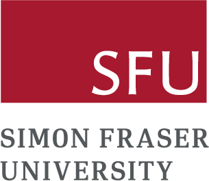

Doctor of Philosoph, Computer Sciense, Simon Fraser University
2021.9 - present
Advisor: Prof. Angel Xuan Chang
3D Vision · Generative Models · AI
Stay humble, trust your instincts. Most importantly, act. When you come to a fork in the road, take it.
I'm currently a Ph.D. student of computer science at Simon Fraser University, advised by professor Angel Xuan Chang. Prior to this, I got my Master of Applied Science degree from the Electrical Engineering Department University of Windsor. And I received my Bachelor of Science degree in the area of Mathematical and Physics Basic Science at School of Mathematical from University of Electronic Science and Technology of China. Currently I am also a research assistant in SFU GrUVi Lab working with professor Angel Xuan Chang at Simon Fraser University. My research focuses on 3D scene understanding and synthesis, with growing interests in embodied AI systems that perceive, reason about, and interact with complex 3D environments.
Updates

2021.9 - present
Advisor: Prof. Angel Xuan Chang
2019.1 - 2021.9
Advisor: Prof. Balakumar Balasingam

2013.9 - 2017.7
Advisor: Prof. Chuan Huang